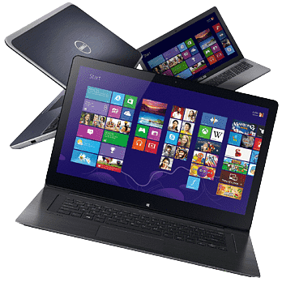

Laptop Details | |
 |
A laptop computer or notebook computer, also known as a laptop or notebook for short, is a small, portable personal computer (PC). Laptops typically have a clamshell form factor with a flat panel screen (usually 11-17 in or 280-430 mm in diagonal size) on the inside of the upper lid and an alphanumeric keyboard and pointing device (such as a trackpad and/or trackpoint) on the inside of the lower lid, although 2-in-1 PCs with a detachable keyboard are often marketed as laptops or as having a "laptop mode" |